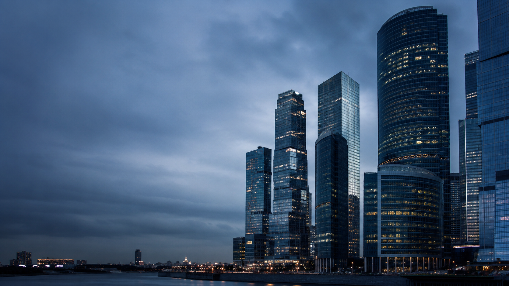

01Space
オフィス環境
オフィス家具全般、レイアウト設計および施工。空間と導線の整備を通じて、働く場の機能性を整えます。

旧サイトの情報をもとに、IBSが支えている範囲を4領域に再編集しました。商品カタログのように見せるのではなく、企業活動を支える基盤として整理しています。
サイト上では説明しすぎず、それでも対応領域は明快に。高級感のあるUIの中で、情報の粒度をコントロールしています。
オフィス家具全般、レイアウト設計および施工。空間と導線の整備を通じて、働く場の機能性を整えます。
複写機、パソコン、通信機器など。日常的に使う業務機器の導入・更新を支えます。
コピー用紙、トナー・インクカートリッジ、一般文具、印刷物など。継続運用に必要なものを安定して届けます。
ネットワーク構築を含む業務基盤整備。個別の詳細や条件は既存取引先との協議に基づきます。
説明量を増やしすぎると、一般向けの営業サイトに見えやすくなります。そこで、IBSの特性に合わせて、抽象度を保ちながら対応領域だけを明快に示す構成にしています。
一般向けの見積依頼フォームや問い合わせ導線は設けず、既存取引先・関係者が必要な情報を確認するためのサイトとして位置付けています。
公開情報は必要最小限にとどめ、個別の詳細は既存の窓口からご案内する方針です。
既存取引先・関係者の方は、下記メールアドレスへご連絡ください。